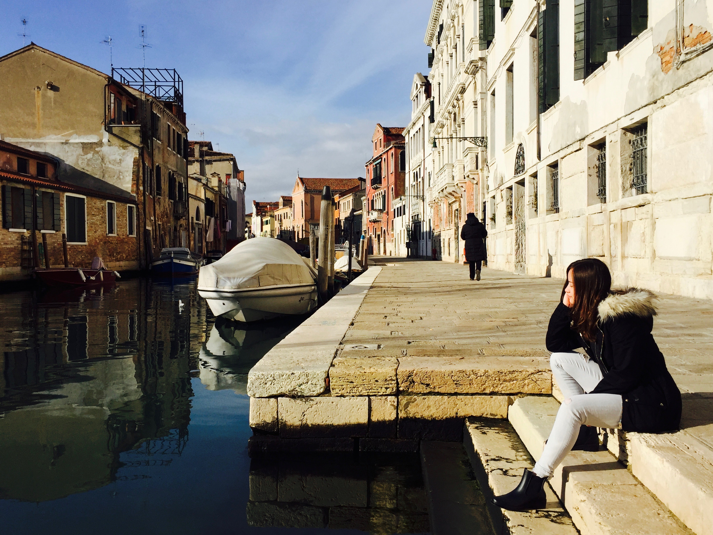

Hi,
I'm Wendy

The Lowdown
I'm a painter, poet, rock climber, mechanical engineer, and an enthusiast of robots, autonomous vehicles, clean energy, and sustainability.
My mission is to improve the outlook for humanity - one action, project, or venture at a time. You can read more about me and my background here.
Questions? Comments?
Don't hesitate to reach out!
Email wtratt@mit.edu or check out my resume.
Social Media: Facebook LinkedIn Spotify GitHub